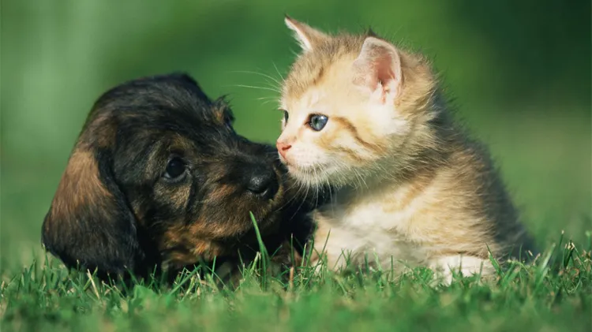

Mascotas que buscan un hogar
Nuestros amigos peludos están esperando conocerte. Cada mascota tiene una historia única y está lista para llenar tu vida de alegría.
Conoce a nuestros amigos que buscan un hogar amoroso donde ser parte de una familia.

Proceso de adopción sencillo
Hacemos que el proceso de adopción sea lo más fácil y transparente posible.
Nuestro equipo está para guiarte en cada paso del proceso de adopción, asegurando la mejor experiencia para ti y para la mascota.

¡Encuentra tu mascota ideal cerca de ti, totalmente gratis!
La compañía perfecta te espera sin que tengas que gastar un centavo.
Descubre hoy mismo cómo conectar con mascotas listas para un hogar lleno de amor, con asesoría y apoyo continuo para que la adopción sea una experiencia feliz y sin complicaciones.